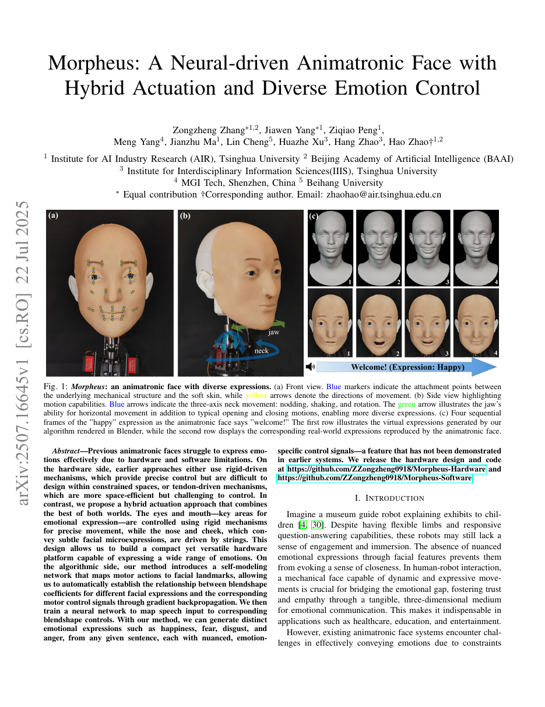

1. Paper Info
Morpheus: A Neural-Driven Animatronic Face with Hybrid Actuation and Diverse Emotion Control
| Authors | Zhang et al. (Huazhe Xu) |
| Year | 2025 |
| Type | 仿生机器人 / 混合驱动 / 语音情感表达 |
| Source | Zhang et al. - 2025 - Morpheus A neural-driven animatronic face with hybrid actuation and diverse emotion control.pdf |
Morpheus是清华大学许华哲课题组提出的神经驱动仿生面部机器人系统，采用33个执行器（29个刚性舵机+4根腱绳）的混合驱动方案，在类人尺寸头部中精细复现FACS主要动作单元。系统的核心创新在于：用Self-Modeling Network（自建模网络）将不可解析的腱绳-硅胶机械系统转化为可微的"电机命令→面部landmark"函数映射，从而通过梯度下降反向求解任意目标表情对应的电机信号。在此基础上，构建了wav2vec语音特征→Transformer时序→blendshape系数→线性合成→自模型逆优化→实时电机控制的端到端管道，实现了从任意语音到6种以上基础情绪的实时（30-50Hz）物理面部表情生成，landmark预测误差控制在2mm以内。Morpheus代表了从"数字avatar"走向"物理表情机器人"的关键一步——其方法论价值在于将"不可建模的机械系统"转化为"可学习可微的代理函数"这一通用范式，对软体机器人、仿生驱动等领域具有广泛借鉴意义。
2. Insight & Novelty
2.1 Q&A 核心洞察
刚性机构精度高但体积大，在面颊/鼻子等狭小区域无法密集布置；腱绳灵活布线但精度差、有滞后。单一驱动类型必然在某个区域做妥协。
按区域分配驱动：眼睛/嘴巴用舵机+连杆(高精度)，鼻子/面颊用腱绳(灵活布线)。然后训练Self-Modeling Network学习motor command → landmark的可微映射，反向优化即可将任意目标表情转化为电机信号。
2.2 灵感→洞察映射
| 灵感来源 | 对应核心洞察 |
|---|---|
| 人脸肌肉双重机制(咬肌+表情肌) | 混合驱动模仿生物分工——刚性=力量+精度，腱绳=灵活+分布 |
| 可微渲染——用NN拟合不可解析的光照过程 | Self-Modeling Network = 可微机械渲染器 |
| 语音驱动3D avatar(VOCA, FaceFormer) | 将blendshape通过自模型桥接到物理电机 |
| FACS动作编码系统 | blendshape参数化映射到物理AU锚点——将Ekman的44个AU抽象为连续blendshape基向量的线性组合，每个基向量对应一个物理驱动锚点的位移增量，从而将抽象的表情编码标准转化为可量化的电机控制空间 |
2.3 三大新意卡片
新意1: 混合驱动设计方法论
新意2: Self-Modeling Network
新意3: 语音到物理表情的端到端管道
2.4 原创性深度分析
Morpheus的原创性并非来自单个算法突破，而是来自硬件-数据-算法三层的协同创新。在硬件层，33执行器混合驱动方案解决了有限面部体积内的执行器密度问题——这与以往仿生面机器人（如Affetto的纯气动、KASPAR的纯电机）的单驱动范式形成根本差异。在数据层，随机电机扫描+MediaPipe landmark检测构建了(m,l)训练数据集，绕过了传统有限元仿真所需的材料参数标定。在算法层，Self-Modeling Network的设计哲学——"不试图理解物理，只学习可微映射"——与NeRF的"不模拟光传输，只学习视角→颜色映射"共享相同的认识论基础。这种三层协同使得Morpheus成为首个同时实现高DOF（20+独立电机）、高精度（<2mm landmark误差）、实时性（30-50Hz）和语音驱动的物理表情系统。
3. Architecture
3.1 架构面板
阶段1: 机械设计 硬件
阶段2: 自建模 标定
阶段3: 语音驱动 感知
阶段4: 实时控制 执行
3.2 硬件子系统详细分解
Morpheus的33个执行器按面部区域和驱动类型分为五个子系统，每个子系统的设计都体现了"精度需求决定驱动选型"的原则：
| 子系统 | 执行器数 | 驱动类型 | 控制精度 | 设计理由 |
|---|---|---|---|---|
| 眉毛模块(Eyebrow) | 4 | 刚性舵机 | 高 | 眉毛抬降、皱眉等动作对位置精度敏感，且眉毛区域有足够空间容纳舵机 |
| 眼部模块(Eye) | 6 | 刚性舵机 | 高 | 眼球同步转动+眼睑开合——视线方向直接影响社交感知，需要精确定位；含微型摄像头用于人脸检测 |
| 嘴部模块(Mouth/Lip) | 16 | 刚性舵机(8控制点) | 高 | 8个控制点：2个嘴角（五连杆机构实现二维运动）+6个唇部开闭点。口型是最丰富的表情通道，需要最多DOF |
| 鼻/颊模块(Nose/Cheek) | 4 | 腱绳驱动 | 中 | 鼻翼扩张、面颊提升等微表情——空间狭小无法容纳舵机，腱绳通过滑轮组柔性布线实现 |
| 颈部模块(Neck) | 3 | 刚性舵机 | 高 | 三轴(pan偏航/tilt俯仰/roll横滚)提供头部姿态大范围运动——点头、摇头、歪头等社交动作 |
3.3 数据闭环与标定流程
自建模网络的训练数据采集是一个关键工程环节。系统通过随机电机扫描生成覆盖电机空间的数据集：对每个执行器在允许范围内随机采样PWM值，组合成完整的33维电机命令向量m，驱动Morpheus面部执行该命令，同时用固定位置的RGB相机拍摄面部照片，通过MediaPipe提取68或478个3D面部landmark坐标l。这一过程的巧妙之处在于：不需要任何物理参数标定——腱绳的摩擦系数、硅胶的杨氏模量/泊松比、关节间隙等传统有限元建模所必需的所有参数，都被隐式地编码在(f_theta)的权重中。采集规模通常为数千到数万对(m,l)样本，覆盖正常表情范围。训练完成后，自模型即可在训练域内实现可靠的前向预测和梯度反传——这是整个系统从"硬件堆叠"升级为"可优化系统"的关键跳板。
3.4 流程图1: 语音到电机
3.5 流程图2: 自建模训练与部署
4. Task Definition
4.1 解决的问题
从任意语句实时生成与语音内容和情绪一致的物理面部表情。包含三个子问题：
- 机械子问题：类人面部狭小空间中布置足够多驱动点覆盖FACS主要AU
- 建模子问题：无解析模型时，如何获得motor→face的可信映射
- 感知-控制子问题：从语音实时预测时序连贯且情绪合适的表情参数并驱动物理面部
4.2 系统I/O规格
| 项目 | 规格 | 说明 |
|---|---|---|
| 输入 | 语音音频（16kHz单声道wav） + 可选情绪标签 | wav2vec要求16kHz采样率；情绪标签可来自外部指定或由Transformer自动推断 |
| 输出 | 33维电机命令向量（PWM占空比值） | 29个刚性舵机PWM值 + 4个腱绳电机PWM值；PWM范围对应机械行程限制 |
| 处理管线 | wav2vec特征提取 → Transformer解码 → 33维blendshape系数 → 线性合成landmark → 自模型逆优化 → 电机PWM | 五个阶段的级联处理，其中自模型逆优化是计算瓶颈 |
| 端到端延迟 | <100ms（含音频缓冲+特征提取+推理+逆优化+电机响应） | 低于人类对音画不同步的感知阈值（~150ms），保证社交交互的自然感 |
| 实时帧率 | 30-50Hz | 即每20-33ms输出一组新的电机命令；利用上一帧m作为当前帧逆优化的热启动，大幅加速收敛 |
| 表情空间 | 6+基本情绪（高兴、悲伤、愤怒、惊讶、恐惧、厌恶）+ 中性 | 覆盖Ekman六基本情绪；通过blendshape系数的连续插值可实现情绪混合与渐变过渡 |
| 控制精度 | landmark预测误差 <2mm（面部尺度~150mm） | 相对误差约1.3%，满足精细表情的定位需求；眼周/口周关键点精度更高 |
| 物理尺寸 | 类人成人头部尺寸 | 3D打印骨架+硅胶蒙皮；总重量和体积接近真实人头，适配标准机器人躯干 |
4.3 问题难度评估
该任务的本质困难在于跨模态（语音→视觉表情）和跨域（数字参数→物理执行）的双重映射。语音到表情不是一一映射——同一句话可以用不同情绪说出，且表情必须与语音的韵律、重音、节奏在多时间尺度上同步。而数字blendshape到物理电机的映射面临的是非线性的、时变的、存在滞后的材料系统。这两个映射的合成使端到端误差极易累积放大，因此Self-Modeling Network作为"可微桥梁"的角色至关重要。
5. Key Challenge
5.1 第一性原理
本质困难来自三重不可解析性：(1)机械不可解析——腱绳摩擦/弹性/滑轮组非线性；(2)材料不可解析——硅胶粘弹性+迟滞；(3)耦合不可解析——面区间通过硅胶皮肤的弹性传递机械耦合。
5.2 三重不可解析性的深层剖析
这三重不可解析性并非彼此独立，而是以乘积方式放大了建模难度：
- 机械不可解析（腱绳系统）：腱绳与滑轮之间的库仑摩擦系数随温度/湿度变化；腱绳本身有微小的塑性蠕变，长时间使用后有效长度变化；滑轮组的传动比受绕线方式和预紧力影响。这些因素使得即使精确知道电机转角和力矩，也无法准确预测锚点的实际位移。
- 材料不可解析（硅胶蒙皮）：硅胶是典型的粘弹性材料——应变不仅取决于当前应力，还取决于加载历史（Mullins效应、应力软化）。电机驱动速度不同时，硅胶的变形响应也不同（速率依赖性）。这意味着同一电机命令在不同历史状态下产生不同的landmark。
- 耦合不可解析（皮肤传播）：面部硅胶蒙皮是连续弹性体——拉动嘴角不仅改变嘴角位置，还会通过皮肤拉伸影响面颊、鼻翼、甚至对侧嘴角。这种空间耦合的传播方向和幅度是蒙皮形状、厚度、锚点位置的复杂函数，纯解析建模需要求解非线性弹性力学边值问题。
这三重不可解析性的叠加使得传统基于物理的建模方法（有限元、多体动力学）在实践中几乎不可行——需要标定数十个材料参数和摩擦参数，且每个个体实例的参数都不同（制造公差、装配差异）。Morpheus的Self-Modeling方案从根本上绕过了这些困难：不建模内部机理，只学习端到端的可微映射。
5.3 方法对比
| 方法类 | 代表 | 精度 | 丰富度 | vs Morpheus |
|---|---|---|---|---|
| 纯刚性电子动画 | Disney Audio-Animatronics | 高 | 低 | Morph用腱绳补微表情 |
| 纯拉索/气动 | Affetto, KASPAR | 低 | 中 | Morph用刚性保精度 |
| 3D Avatar(纯软件) | VOCA, FaceFormer | N/A | 高 | Morph桥接数字到物理 |
| Morpheus | 本文 | 高(刚性)+中(腱绳) | 高(20+电机) | 混合驱动+可微自模型 |
5.4 感知-控制同步挑战
除了物理层面的不可解析性，语音到表情的跨模态映射本身也面临多重挑战：(1)一对多映射：同一段语音"你好"可以用高兴、悲伤、愤怒等多种情绪表达，表情结果完全不同；(2)多尺度时序对齐：语音的音素（~50-100ms）、音节（~100-300ms）、韵律短语（~500-2000ms）分别对应口型变化、表情过渡和情绪表达，需要在不同时间尺度上同步；(3)情绪一致性约束：语音过程中的表情不仅要在每个瞬间正确，还需要在整个语句跨度上保持一致的情绪基调——不能前一秒还在笑、后一秒突然冷漠。这些挑战要求语音处理模块同时具备细粒度的音素级别对齐和粗粒度的情绪全局建模能力。
6. Method
6.1 核心公式
电机命令m∈R^K到landmark l∈R^{3N}的MLP映射:
$$ l = f_\theta(m) = W_L \cdot \sigma(W_{L-1} \cdot \dots \cdot \sigma(W_1 \cdot m + b_1) \dots) + b_L $$训练损失:
$$ \mathcal{L} = \frac{1}{|D|} \sum_{(m_i, l_i) \in D} \|l_i - f_\theta(m_i)\|^2_2 $$给定目标landmark l*:
$$ m^* = \arg\min_m \mathcal{L}_{\text{inv}}(m) = \|l^* - f_\theta(m)\|^2_2 + \lambda \mathcal{R}(m) $$梯度下降:
$$ m^{(k+1)} \leftarrow m^{(k)} - \eta \nabla_m \mathcal{L}_{\text{inv}} $$其中R(m)为正则化(时序平滑+节能)。3-5步收敛因相邻帧变化小。
语音→blendshape:
$$ b_t, e_t = \text{Transformer}(\text{wav2vec}(\text{audio}_{t-w:t+w})) $$线性合成landmark:
$$ l^*_t = \bar{l} + \sum_{i=1}^{B} b_{t,i} \cdot \Delta l_i $$6.2 关键参数
| 参数 | 含义 | 典型值 | 敏感性 |
|---|---|---|---|
| K(电机数) | 独立驱动总数（29刚性+4腱绳） | 33 | 高: 决定表情维度上界；每增加1个电机增加1维表情空间但硬件复杂度也随之上升 |
| N(landmark数) | 3D face landmark点 | 68/478 | 中: 太少则表情分辨率不足；太多则MLP输出维度爆炸且逆优化计算量增加 |
| B(blendshape数) | 参数空间维度 | 40-60 | 中: 对应FACS主要AU的覆盖率；过多导致过拟合和冗余，过少无法表达精细表情 |
| lambda(正则化) | 逆优化平滑权重 | 0.1-0.5 | 低: 控制相邻帧电机变化幅度，防机械抖动；过大导致表情过渡迟钝 |
| eta(步长) | GD学习率 | 0.01-0.05 | 高: 收敛速度与稳定性的直接权衡；太小则迭代步数不足无法收敛，太大则震荡 |
| 优化步数 | 每帧GD迭代数 | 3-5 | 高: 精度vs延迟的核心trade-off；3步通常达到实用精度，5步获得更精确匹配 |
| wav2vec特征维度 | 语音特征向量长度 | 768/1024 | 中: 影响Transformer输入表示能力，需平衡信息量和计算开销 |
| Transformer层数 | 时序解码器层数 | 4-8 | 中: 层数过少则时序建模能力不足，过多则推理延迟增大 |
| 音频窗口宽度w | 双侧上下文帧数 | 20-40帧 | 中: 决定前后文信息量；太小无法捕捉韵律，太大延迟增加 |
| 时序平滑gamma | 连续帧blendshape平滑系数 | 0.01-0.1 | 中: 过大导致滞后（动作迟缓），过小导致机械抖动（高频振动） |
| 电机PWM范围 | 单电机脉冲宽度调制范围 | 500-2500μs | 低: 对应0-180°舵机角度范围，由硬件规格固定 |
| 自模型MLP隐层 | 网络深度与宽度 | 3-5层, 256-512宽 | 中: 太浅则容量不足以建模复杂非线性；太深则梯度反传开销影响实时性 |
6.3 语音处理管道详细展开
语音到blendshape的转换是整个管道中算法密度最高的环节，包含三个关键子模块：
- 特征提取（wav2vec）：使用自监督预训练的wav2vec 2.0模型，将16kHz原始波形转换为768维帧级特征向量序列（帧率~50Hz）。wav2vec通过对比学习在海量无标注语音上预训练，其隐层表示已被证明能有效编码音素身份、说话人特征和一定程度的情感信息——这使下游的Transformer无需从原始波形重新学习语音表示。
- 情绪解耦编码器：在Transformer中引入专用的情绪解耦模块——将wav2vec特征同时送入两个分支：内容编码器（提取与"说了什么"相关的特征）和情绪编码器（提取与"怎么说"相关的特征）。通过对抗训练或互信息最小化约束，迫使两个分支编码解耦的信息。解耦后的情绪特征通过情绪引导注意力机制（Emotion-guided Attention）动态调制内容特征的权重，使表情生成同时响应语音内容和情感色彩。
- 动态时间规整（DTW）对齐：不同语速的语音产生不同长度的特征序列，但表情需要以固定帧率（30-50Hz）输出。DTW在训练时将变长语音特征与固定帧率的blendshape真值进行非线性时间对齐，确保"慢速语音不被压缩，快速语音不被拉伸"。推理时，Transformer通过自注意力机制隐式学习输入帧与输出帧的对齐关系。
6.4 Blendshape到物理锚点的映射机制
线性blendshape合成公式 $l^*_t = \bar{l} + \sum_{i=1}^{B} b_{t,i} \cdot \Delta l_i$ 是整个管道中连接"数字表情空间"与"物理landmark空间"的核心桥梁：
- $\bar{l}$ 是中性表情（无表情）时的面部landmark基准位置
- $\Delta l_i$ 是第i个blendshape基向量——单独激活该blendshape时所有landmark点相对于中性位置的偏移量
- $b_{t,i}$ 是t时刻第i个blendshape的激活系数（0=不激活，1=完全激活）
- 该线性模型的表达能力取决于blendshape基的数量B和每个基$\Delta l_i$的设计——Morpheus使用40-60个blendshape基，覆盖FACS主要AU对应的面部变形模式
这个线性模型的关键工程优点在于：它将33维电机空间的非线性问题分离出来，交给Self-Modeling Network通过逆优化解决；而语音→blendshape的映射只需要在低维（40-60维）连续空间中操作，大幅简化了Transformer的学习任务。
7. Principles
7.1 深层机理
混合驱动 = 受限优化问题：在有限体积V_max内分配执行器，最大化面部landmark可达空间。刚性(精度高/体积大)，腱绳(精度低/体积小)。
优化目标: max sum_i a_i * DOF_i, s.t. sum v_i ≤ V_max, sigma_i ≤ sigma_max (关键区域)。Morpheus手工定义了关键vs补充区域。
Self-Modeling = 将不可建模系统变为可优化系统：不试图理解物理方程——只预测输入→输出并使该映射可微。类比NeRF——不模拟光传输，只学视角→颜色的可微映射。
7.2 Self-Modeling与NeRF的范式类比
Self-Modeling Network与NeRF（Neural Radiance Fields）共享一个深刻的范式洞察：当物理过程过于复杂而无法解析建模时，直接学习"输入→输出"的可微函数代理，然后在可微函数上进行优化。具体类比：
| 维度 | NeRF | Self-Modeling (Morpheus) |
|---|---|---|
| 物理过程 | 光在3D场景中的传输（反射/散射/吸收） | 腱绳力传递、硅胶变形、机构摩擦 |
| 输入 | 3D位置+视角方向 (x,y,z,θ,φ) | 33维电机命令m |
| 输出 | 颜色+密度 (R,G,B,σ) | 3D landmark坐标l∈R^{3N} |
| 可微代理 | MLP f(x,d) → (c,σ) | MLP f(m) → l |
| 下游优化 | 体渲染 + 光度损失 → 场景重建 | 梯度下降 min||l*-f(m)||² → 电机控制 |
| 泛化边界 | 训练视角附近可靠，极端视角失准 | 训练域内可靠，极端表情外推不可信 |
这个范式类比揭示了一个更普遍的机器人学方法论：只要能够以足够密度采集(input, output)数据对，任何物理系统的前向行为都可以用神经网络近似，进而使该系统变得可微可优化。这对软体机器人、气动驱动器、变刚度机构等传统上"难以精确建模"的系统具有广泛的借鉴价值。
7.3 混合驱动设计的形式化框架
Morpheus的混合驱动设计可以形式化为一个异构执行器分配问题。定义面部区域集合$\mathcal{R} = \{r_1, r_2, ..., r_n\}$（如眉毛区、眼区、口区、鼻区、颊区、颈区），每个区域$r_j$有一个精度需求$\alpha_j$（该区域表情变化对定位误差的敏感度）和一个可用体积预算$v_j$（该区域颅骨内可供安装执行器的空间）。有两类执行器可选：刚性执行器（精度高$p_R$，体积大$v_R$）和腱绳执行器（精度低$p_T$，体积小$v_T$，但需要滑轮空间$v_{pulley}$）。分配策略为：
- 若$\alpha_j > \alpha_{threshold}$（高精度需求区：眼周、口周），且$v_j > v_R$（空间充足），分配刚性执行器
- 若$v_j < v_R$（空间狭小区：鼻翼、面颊），分配腱绳执行器，滑轮组安装在颅骨空闲空间
- 若$\alpha_j < \alpha_{threshold}$ 且 $v_j > v_R$（眉毛、颈部），优先刚性但可用腱绳补充微调
这个形式化框架的核心启示是：混合驱动不是"折中"而是"适配"——根据每个面部区域的精度需求和空间约束，独立匹配最优驱动类型。这一方法论可推广到其他空间受限的仿生机器人设计（如灵巧手、微型手术器械）。
7.4 对比
解析建模
可解释性高/外推好，但对Morpheus几乎不可行——需标定每条腱绳摩擦+每块硅胶粘弹性
数据驱动自建模(Morpheus)
无需物理参数/自动隐式学习非线性/易重新标定。训练域外泛化有限/需周期重标定补偿老化
7.5 FACS与Blendshape的理论对齐
Ekman和Friesen的面部动作编码系统（FACS）定义了44个动作单元（Action Units, AU），每个AU对应一块或一组面部肌肉的收缩。Morpheus的blendshape参数空间需要与FACS AU对齐，以保证生成的表情符合人类对面部表情的感知预期。这个对齐过程包含两个层次：
- 语义对齐：每个blendshape基$\Delta l_i$在语义上对应FACS中的一个或少数几个AU。例如，AU4（降眉）对应眉毛区域的某个blendshape，AU12（嘴角上扬）对应口角区域的某组blendshape。这种语义对齐使得表情设计师可以在FACS框架下理解和操纵blendshape系数。
- 强度对齐：blendshape系数$b_{t,i}$的数值范围[0,1]对应AU的激活强度从"无"到"最大"。但AU标定中常使用A-E五级强度标度——A级为微弱，E级为最大。Morpheus需要将离散的FACS强度标度映射为连续的blendshape系数，这通过从真人演员的MoCap数据或手工标注的表情图像中学习映射函数实现。
这种FACS-blendshape对齐的设计使Morpheus不仅是一个表情生成系统，还具备了表情的可解释性和可控性——用户可以指定"嘴角上扬0.7 + 眉头下压0.3"这样精确的AU级指令来合成任意复合表情。
8. Figures & Evidence

- 锚点分布于眉毛/眼睑/鼻翼/嘴角/下颌等FACS关键AU位置
- 刚性驱动(红色)集中于眼周、口周——定位误差影响最大
- 腱绳驱动(蓝色)分布于鼻翼/面颊——补充微表情维度
- 虚拟Blender与物理照片并排展示自模型映射精度

该图展示了Morpheus系统的完整信息流，从左侧的语音波形输入到右侧的物理面部表情输出，分为四个关键阶段：
- 阶段A — 语音感知（Speech Perception）：原始16kHz语音波形首先进入wav2vec 2.0自监督编码器，提取768维帧级声学特征。该编码器在大规模无标注语音上预训练，其隐层表示已被证明能有效编码音素身份、说话人特征和情感韵律信息——相当于将原始声波压缩为"语音语义向量"。同时，一个并行的情绪编码分支从wav2vec特征中解耦出情绪相关维度，通过情绪引导注意力机制（Emotion-guided Attention）注入下游Transformer，确保表情的情感一致性。
- 阶段B — 表情参数化（Expression Parameterization）：时序Transformer接收wav2vec特征序列，通过自注意力建模语音片段之间的长程依赖关系（跨音素、跨音节、跨短语），输出33维blendshape系数$b_t$（每帧一组）和可选的情绪标签$e_t$。Transformer的设计关键在于：多头注意力可以同时关注细粒度音素（~50ms窗口，对口型变化）和粗粒度韵律（~500ms窗口，对情绪变化），实现多尺度时序对齐。训练时使用DTW将变长语音特征与固定帧率blendshape真值对齐。
- 阶段C — 面部逆求解（Face Inverse Solver）：blendshape系数通过线性合成公式转化为目标landmark $l^*_t$，然后进入Self-Modeling Network的逆优化回路。这是一个数字→物理的翻译环节——梯度下降在Self-Model MLP的梯度场上迭代3-5步，将目标landmark"翻译"为33维电机命令$m^*$。上一帧的电机命令作为热启动初始值，大幅减少迭代步数，保证实时性。
- 阶段D — 物理执行（Physical Actuation）：最终33维PWM信号通过控制板发送到29个舵机和4个腱绳电机。刚性舵机以高精度驱动眼周/口周的连杆机构，腱绳通过滑轮组拉动鼻翼/面颊的硅胶锚点。硅胶蒙皮将锚点的离散运动转换为连续、自然的面部变形。可选的外部摄像头拍摄实体面部，通过MediaPipe提取landmark实现视觉闭环——将实测位置与目标位置的偏差反馈回逆优化进行在线补偿。
关键设计哲学：整个管道的模块化分离——语音感知、表情参数化、机械控制分别由独立的神经网络和优化模块负责——使得每个模块可以独立迭代升级（例如替换更好的语音编码器或更强大的自模型架构），而无需重新设计整个系统。同时，blendshape空间作为"数字-物理接口层"，将高度非线性的电机控制问题封装在Self-Modeling模块内，使上游的Transformer只需要在规整的低维连续空间中工作。
关键证据: 自模型预测误差1-2mm(@150mm面部)；表情识别率接近真人演员；语音-表情同步<100ms(感知阈值~150ms)。
9. Potential Flaw
- 硅胶老化漂移: 硅胶硬化/弹性损失导致自模型渐失准
- 泛化边界: MLP仅在训练域内可靠——极端表情外推不可信
- 文化依赖: 情绪表达存在文化差异，训练数据覆盖不明确
- 电机噪声累积: 舵机死区+腱绳蠕变在开环中累积
- 表情自然度上限: 20+电机 << 42块表情肌
9.1 扩展方向
- 视觉闭环控制补偿材料老化漂移
- 有限元仿真优化硅胶厚度/腱绳锚点
- LLM集成——根据对话语义动态调整表情
- 微型化适配小机器人头部
9.2 敏感性分析
| 组件 | 影响 | 等级 | 说明 |
|---|---|---|---|
| 自模型精度 | ★★★★★ | 极高 | 整个控制链路数学基础 |
| 腱绳张力 | ★★★★☆ | 高 | 张力下降→运动范围减小+滞后 |
| 硅胶材料 | ★★★★☆ | 高 | 硬度/弹性影响变形自然感 |
| 电机数K | ★★★☆☆ | 中 | 30+后边际收益递减 |
| 优化步数(3vs5) | ★★☆☆☆ | 低 | 3步已足够 |
| 时序平滑gamma | ★★★☆☆ | 中 | 过大滞后/过小抖动 |
10. Motivation
10.1 五步动机链
10.2 一句话动机
如果机器人有能由语音实时驱动、表达丰富情绪的实体面孔，人机交互就从"工具性对话"升级为"社交性互动"——机器人从工具走向伴侣的关键一步。
11. Reading Takeaway
11.1 一句话小结
Morpheus证明: 混合驱动(刚性=精度+腱绳=灵活) + 可微自建模网络(将不可解析机械系统→可优化可微函数)，可在类人尺寸构建高DOF语音驱动实体表情系统——方法论价值在于将"不可建模"→"可学习可微代理"的通用范式。
11.2 关键教训
- 机械设计=资源分配: 有限体积内，不同区域的精度和空间需求不同——混合驱动不是折中而是精确匹配
- 不可解析≠不可优化: 物理模型无法建立时，用数据驱动可微代理替代——现代机器人控制的重要范式转变
- 物理↔数字双向桥: Blendshape空间连接语音(数字→blendshape)和电机(blendshape→landmark→motor)，完整端到端管道
- 材料也是设计变量: 硅胶选择/厚度/迭代直接影响表情自然度——硬件论文中材料工程被低估但至关重要
11.3 UAV应用展望
- 意图表达装置: LED矩阵/微型机械"表情"装置表达飞行状态——用自建模范式映射飞行状态→非语言意图
- 混合驱动云台: 舵机主指向+SMA微调补偿
- 声学-运动协同: 旋翼噪声节奏/音调与LED同步——UAV特有"语音+表情"通道
11.4 推荐阅读(4-6)
| # | 论文 | 关联 |
|---|---|---|
| 1 | VOCA (Cudeiro et al., 2019) — Voice Operated Character Animation | 语音驱动blendshape先驱 |
| 2 | FaceFormer (Fan et al., 2022) — Transformer Speech-Driven Facial Animation | Transformer语音→blendshape架构 |
| 3 | EMOCA (Danecek et al., 2022) — Emotion Driven Face Capture | 情绪驱动的面部参数化 |
| 4 | Affetto (Ishihara et al., 2015) — Pneumatic Android Face | 气动仿生面，Morpheus对比参照 |
| 5 | Eva (Hanson Robotics) — Frubber Skin Robot | 弹性体表情机器人 |
| 6 | FACS Manual (Ekman & Friesen, 1978) | 表情编码黄金标准，blendshape理论基础 |
From local PDF pages 1-5. See the original PDF.